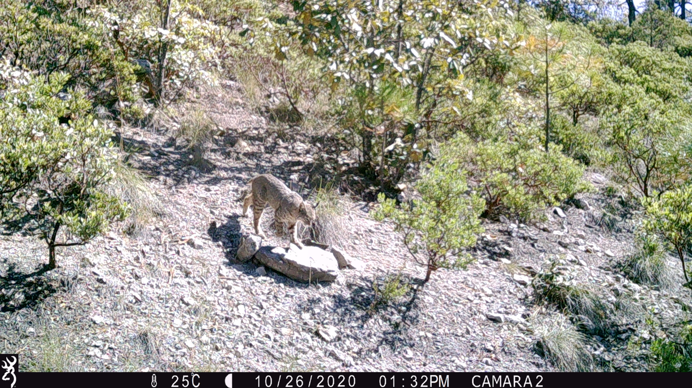

Trabajo en campo
Actividades de muestreo de supervivencia de reforestación.
Proyectos de Restauración Ecológica
Trazo de obras de restauración en curvas de nivel.
Proyecto de Compensación Ambiental
Levantamiento de información de presas de piedra acomodada.

Obras de Restauración
Toma aérea de terrazas individuales y reforestación de pino.

Reforestación Exitosa
Toma aérea de reforestación de pino.

Educación Ambiental
Plática sobre Áreas Naturales Protegidas.

Monitoreo de Fauna
Isntalación de Camara Trampa.

Monitoreo de Fauna
Revisión de Camara Trampa.

Monitoreo de Fauna
Fotografía de fauna silvestre con camara trampa.
 Español: Idioma materno
Español: Idioma materno Inglés: Nivel Intermedio
Inglés: Nivel Intermedio